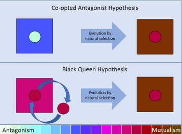
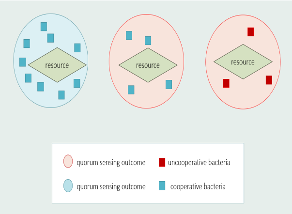

Piper Welch
I am Ph.D student at UVM working in evolutionary robotics!
Bio:
Awards:
For any inquiries, feel free to reach out to me via mail!

Publications

Endosymbiosis or Bust: Influence of Ectosymbiosis on Evolution of Obligate Endosymbiosis
Kiara Johnson, Piper Welch, Emily Dolson, Anya Vostinar
ALIFE 2022: The 2022 Conference on Artificial Life, 2022
Project Page / Paper / Supplemental / Code /
Kiara Johnson, Piper Welch, Emily Dolson, Anya Vostinar
ALIFE 2022: The 2022 Conference on Artificial Life, 2022
Project Page / Paper / Supplemental / Code /
@InProceedings{johnson2022endosymbiosis,
author = {Kiara Johnson and Piper Welch and Emily Dolson and Anya Vostinar},
title = {Endosymbiosis or Bust: Influence of Ectosymbiosis on Evolution of Obligate Endosymbiosis},
booktitle = {ALIFE 2022: The 2022 Conference on Artificial Life},
year = {2022},
}
Defect or Die: How Does Low Resource Availability Impact the Preservation of Cooperation in a Quorum-Sensing Regulated Public Good Economy?
Piper Welch, Anya Vostinar
ALIFE 2021: The 2021 Conference on Artificial Life, 2021
Project Page / Paper / Supplemental / Code /
Piper Welch, Anya Vostinar
ALIFE 2021: The 2021 Conference on Artificial Life, 2021
Project Page / Paper / Supplemental / Code /
@InProceedings{welchdefect,
author = {Piper Welch and Anya Vostinar},
title = {Defect or Die: How Does Low Resource Availability Impact the Preservation of Cooperation in a Quorum-Sensing Regulated Public Good Economy?},
booktitle = {ALIFE 2021: The 2021 Conference on Artificial Life},
year = {2021},
}